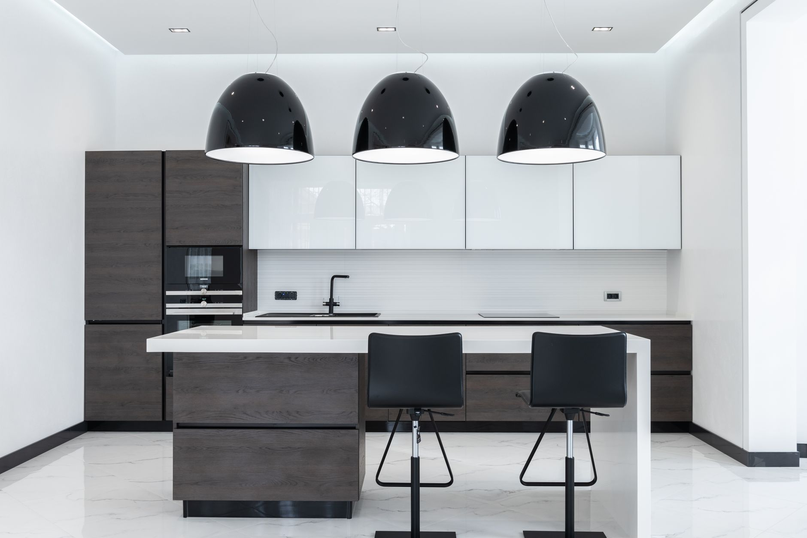
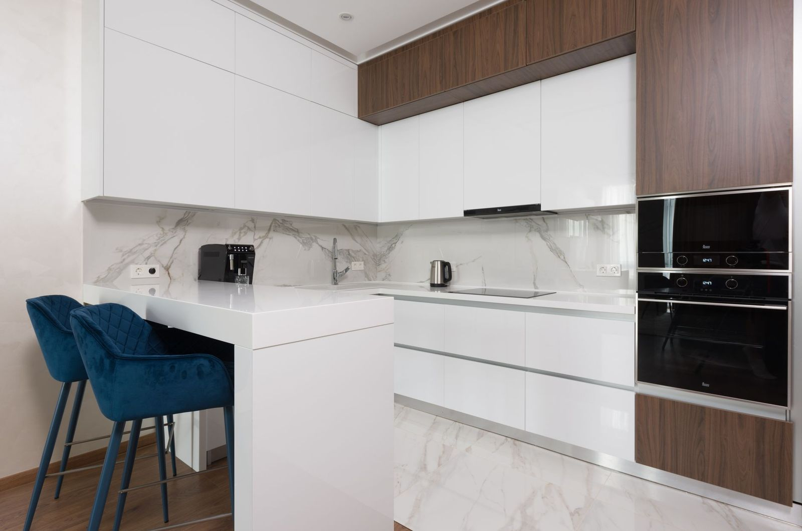
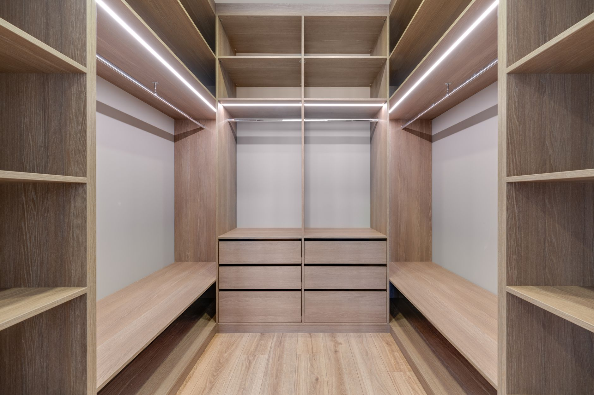
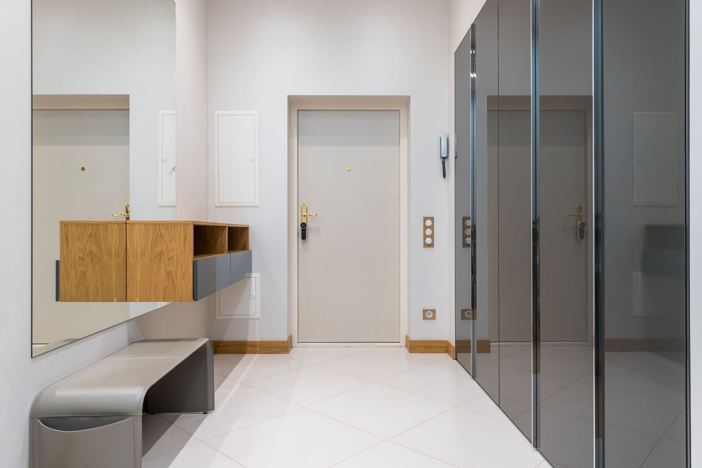
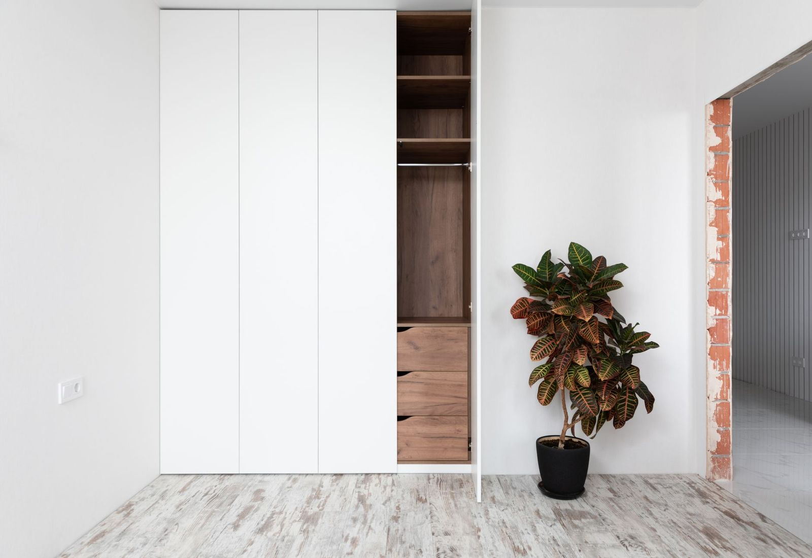
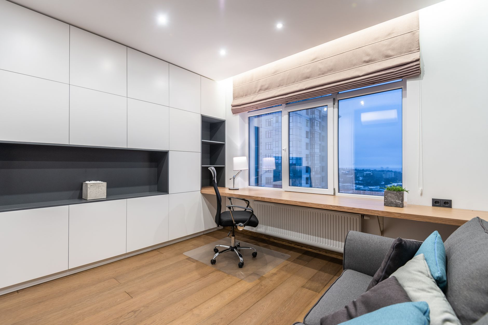
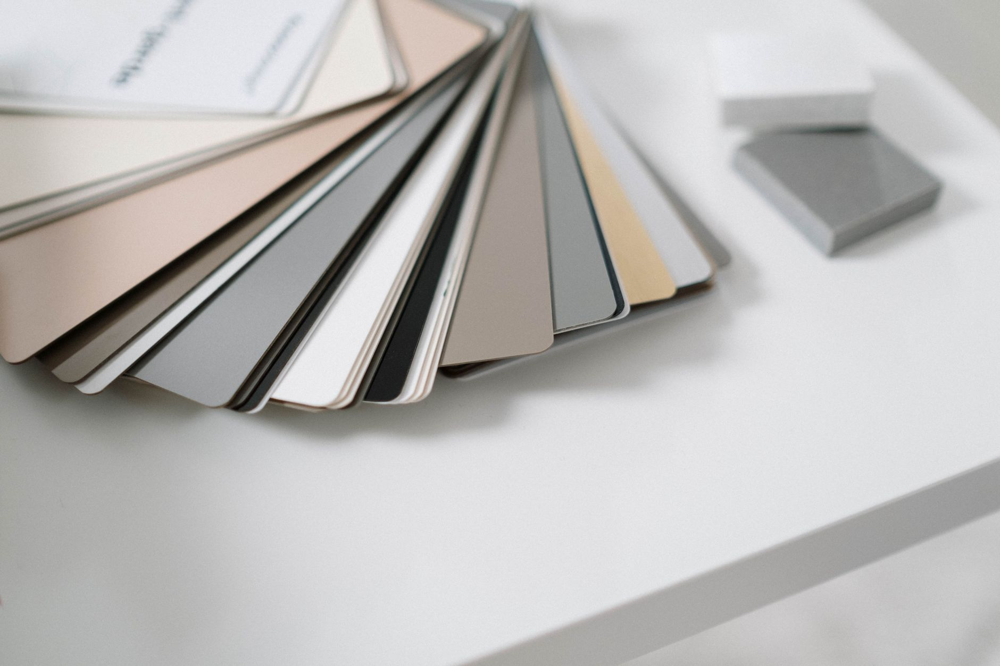

Projektujemy i wykonujemy zabudowy do każdego pomieszczenia. Pomiar, projekt i wycena są bezpłatne.

Zaczynamy od tego, jak gotujesz: gdzie stoi lodówka, ile potrzebujesz blatu roboczego i czy zmywarka ma być podniesiona. Dopiero potem dobieramy fronty i kolory.

Wnętrze garderoby układamy pod to, co naprawdę w niej trzymasz — długie sukienki, koszule, buty czy pościel. Każdy centymetr wysokości ma zadanie.

Wąski korytarz, skos nad schodami, wnęka po starej szafie — to miejsca, w których gotowe meble nigdy nie pasują. My robimy je pod wymiar.

Szafa od ściany do ściany i od podłogi po sufit — bez szpar zbierających kurz. Systemy przesuwne dobieramy do ciężaru frontów, żeby chodziły cicho przez lata.

Miejsce do pracy w domu albo zabudowa dla firmy. Biurko na wymiar, zamykane szafki na dokumenty i przejścia na kable schowane w meblu.

Pracujemy na płytach i okuciach sprawdzonych marek. Przy wycenie pokazujemy różnicę w cenie między wariantami, żebyś wiedział, za co dopłacasz.
Przyjedziemy, zmierzymy i przygotujemy projekt z wyceną. Bez zaliczek na tym etapie i bez zobowiązań.